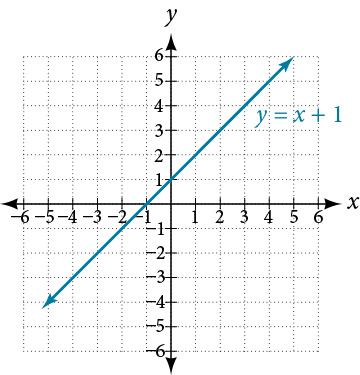
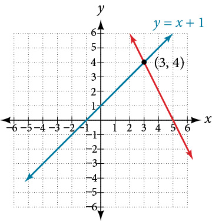
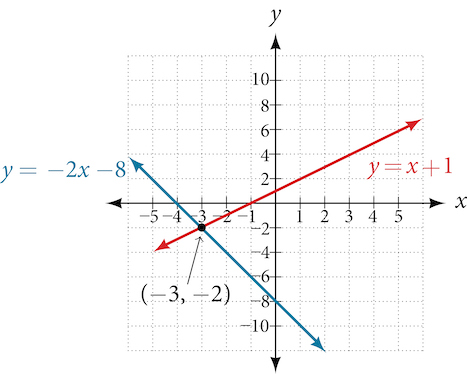
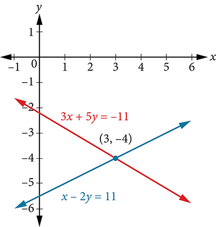
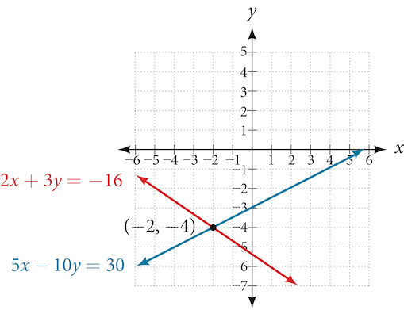
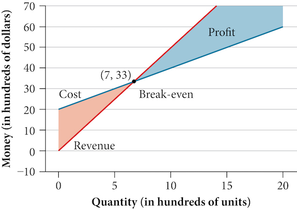
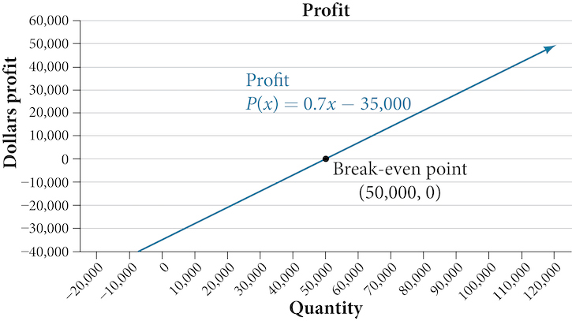
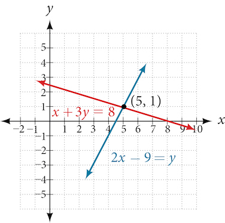

Systems of Linear Equations: Two Variables
Learning Objectives
- Determine whether an ordered pair is a solution of a system of equations (IA 4.1.1)
- Solve a system of linear equations by graphing (IA 4.1.2)
Objective: Determine whether an ordered pair is a solution of a system of equations (IA 4.1.1)
A system of linear equations is a group of two or more linear equations. For example,
is a system of linear equations
A solution to a system of linear equations is an ordered pair x,y that is a solution to every equation in the system.
Determine whether the ordered pairs are solutions to the given system.
at and
Solution
We substitute (3, 1) into both equations:
| True | True |
| is a solution to | is a solution to |
| Conclusion: since is a solution to both equations, then it is a solution to the system | |
Next we substitute (-3, -1) into both equations:
| True | False |
| is a solution to | is not a solution to |
| Conclusion: Since is not a solution to one of the equations, then it is not a solution to the system | |
Practice Makes Perfect
Determine whether the ordered pairs are solutions to the given system.
at and
At (0, 0):
| ________________________ ________________________ |
________________________ ________________________ |
| ________________________ ________________________ |
________________________ ________________________ |
| Conclusion: ________________________ | |
At (1, –3)
| ________________________ ________________________ |
________________________ ________________________ |
| ________________________ ________________________ |
________________________ ________________________ |
| Conclusion: ________________________ | |
Solve a system of linear equations by graphing (IA 4.1.2)
Solve the system by graphing.
Solve the system by graphing.
Solution
| Step 1 |
Graph We can use the slope intercept – form: Slope = 1 y-intercept: (0, 1)  |
| Step 2 |
Graph We can use the slope intercept – form: Slope = –2 y-intercept: (0, 10)  |
| Step 3 | The lines intersect |
| Step 4 | The solution is the point (3, 4) |
| Step 5 |
Let’s check the solution: Since (3, 4) is a solution to both equations, then it is a solution to the system |
Practice Makes Perfect
Determine whether the ordered pair is a solution to the given system
Solve the following system by graphing.
A skateboard manufacturer introduces a new line of boards. The manufacturer tracks its costs, which is the amount it spends to produce the boards, and its revenue, which is the amount it earns through sales of its boards. How can the company determine if it is making a profit with its new line? How many skateboards must be produced and sold before a profit is possible? In this section, we will consider linear equations with two variables to answer these and similar questions.
Introduction to Systems of Equations
In order to investigate situations such as that of the skateboard manufacturer, we need to recognize that we are dealing with more than one variable and likely more than one equation. A system of linear equations consists of two or more linear equations made up of two or more variables such that all equations in the system are considered simultaneously. To find the unique solution to a system of linear equations, we must find a numerical value for each variable in the system that will satisfy all equations in the system at the same time. Some linear systems may not have a solution and others may have an infinite number of solutions. In order for a linear system to have a unique solution, there must be at least as many equations as there are variables. Even so, this does not guarantee a unique solution.
In this section, we will look at systems of linear equations in two variables, which consist of two equations that contain two different variables. For example, consider the following system of linear equations in two variables.
The solution to a system of linear equations in two variables is any ordered pair that satisfies each equation independently. In this example, the ordered pair (4, 7) is the solution to the system of linear equations. We can verify the solution by substituting the values into each equation to see if the ordered pair satisfies both equations. Shortly we will investigate methods of finding such a solution if it exists.
In addition to considering the number of equations and variables, we can categorize systems of linear equations by the number of solutions. A consistent system of equations has at least one solution. A consistent system is considered to be an independent system if it has a single solution, such as the example we just explored. The two lines have different slopes and intersect at one point in the plane. A consistent system is considered to be a dependent system if the equations have the same slope and the same y-intercepts. In other words, the lines coincide so the equations represent the same line. Every point on the line represents a coordinate pair that satisfies the system. Thus, there are an infinite number of solutions.
Another type of system of linear equations is an inconsistent system, which is one in which the equations represent two parallel lines. The lines have the same slope and different y-intercepts. There are no points common to both lines; hence, there is no solution to the system.
Determining Whether an Ordered Pair Is a Solution to a System of Equations
Determine whether the ordered pair is a solution to the given system of equations.
Solution
Substitute the ordered pair into both equations.
The ordered pair satisfies both equations, so it is the solution to the system.
Solving Systems of Equations by Graphing
There are multiple methods of solving systems of linear equations. For a system of linear equations in two variables, we can determine both the type of system and the solution by graphing the system of equations on the same set of axes.
Solving a System of Equations in Two Variables by Graphing
Solve the following system of equations by graphing. Identify the type of system.
Solution
Solve the first equation for
Solve the second equation for
Graph both equations on the same set of axes as in Figure 4.

The lines appear to intersect at the point We can check to make sure that this is the solution to the system by substituting the ordered pair into both equations.
The solution to the system is the ordered pair so the system is independent.
Solving Systems of Equations by Substitution
Solving a linear system in two variables by graphing works well when the solution consists of integer values, but if our solution contains decimals or fractions, it is not the most precise method. We will consider two more methods of solving a system of linear equations that are more precise than graphing. One such method is solving a system of equations by the substitution method, in which we solve one of the equations for one variable and then substitute the result into the second equation to solve for the second variable. Recall that we can solve for only one variable at a time, which is the reason the substitution method is both valuable and practical.
Solving a System of Equations in Two Variables by Substitution
Solve the following system of equations by substitution.
Solution
First, we will solve the first equation for
Now we can substitute the expression for in the second equation.
Now, we substitute into the first equation and solve for
Our solution is
Check the solution by substituting into both equations.
Solving Systems of Equations in Two Variables by the Addition Method
A third method of solving systems of linear equations is the addition method. In this method, we add two terms with the same variable, but opposite coefficients, so that the sum is zero. Of course, not all systems are set up with the two terms of one variable having opposite coefficients. Often we must adjust one or both of the equations by multiplication so that one variable will be eliminated by addition.
Solving a System by the Addition Method
Solve the given system of equations by addition.
Solution
Both equations are already set equal to a constant. Notice that the coefficient of in the second equation, –1, is the opposite of the coefficient of in the first equation, 1. We can add the two equations to eliminate without needing to multiply by a constant.
Now that we have eliminated we can solve the resulting equation for
Then, we substitute this value for into one of the original equations and solve for
The solution to this system is
Check the solution in the first equation.
Analysis
We gain an important perspective on systems of equations by looking at the graphical representation. See Figure 5 to find that the equations intersect at the solution. We do not need to ask whether there may be a second solution because observing the graph confirms that the system has exactly one solution.

Using the Addition Method When Multiplication of One Equation Is Required
Solve the given system of equations by the addition method.
Solution
Adding these equations as presented will not eliminate a variable. However, we see that the first equation has in it and the second equation has So if we multiply the second equation by the x-terms will add to zero.
Now, let’s add them.
For the last step, we substitute into one of the original equations and solve for
Our solution is the ordered pair See Figure 6. Check the solution in the original second equation.

Using the Addition Method When Multiplication of Both Equations Is Required
Solve the given system of equations in two variables by addition.
Solution
One equation has and the other has The least common multiple is so we will have to multiply both equations by a constant in order to eliminate one variable. Let’s eliminate by multiplying the first equation by and the second equation by
Then, we add the two equations together.
Substitute into the original first equation.
The solution is Check it in the other equation.
See Figure 7.

Using the Addition Method in Systems of Equations Containing Fractions
Solve the given system of equations in two variables by addition.
Solution
First clear each equation of fractions by multiplying both sides of the equation by the least common denominator.
Now multiply the second equation by so that we can eliminate the x-variable.
Add the two equations to eliminate the x-variable and solve the resulting equation.
Substitute into the first equation.
The solution is Check it in the other equation.
Identifying Inconsistent Systems of Equations Containing Two Variables
Now that we have several methods for solving systems of equations, we can use the methods to identify inconsistent systems. Recall that an inconsistent system consists of parallel lines that have the same slope but different -intercepts. They will never intersect. When searching for a solution to an inconsistent system, we will come up with a false statement, such as
Solving an Inconsistent System of Equations
Solve the following system of equations.
Solution
We can approach this problem in two ways. Because one equation is already solved for the most obvious step is to use substitution.
Clearly, this statement is a contradiction because Therefore, the system has no solution.
The second approach would be to first manipulate the equations so that they are both in slope-intercept form. We manipulate the first equation as follows.
We then convert the second equation expressed to slope-intercept form.
Comparing the equations, we see that they have the same slope but different y-intercepts. Therefore, the lines are parallel and do not intersect.
Analysis
Writing the equations in slope-intercept form confirms that the system is inconsistent because all lines will intersect eventually unless they are parallel. Parallel lines will never intersect; thus, the two lines have no points in common. The graphs of the equations in this example are shown in Figure 8.

Expressing the Solution of a System of Dependent Equations Containing Two Variables
Recall that a dependent system of equations in two variables is a system in which the two equations represent the same line. Dependent systems have an infinite number of solutions because all of the points on one line are also on the other line. After using substitution or addition, the resulting equation will be an identity, such as
Finding a Solution to a Dependent System of Linear Equations
Find a solution to the system of equations using the addition method.
Solution
With the addition method, we want to eliminate one of the variables by adding the equations. In this case, let’s focus on eliminating If we multiply both sides of the first equation by then we will be able to eliminate the -variable.
Now add the equations.
We can see that there will be an infinite number of solutions that satisfy both equations.
Analysis
If we rewrote both equations in the slope-intercept form, we might know what the solution would look like before adding. Let’s look at what happens when we convert the system to slope-intercept form.
See Figure 9. Notice the results are the same. The general solution to the system is

Using Systems of Equations to Investigate Profits
Using what we have learned about systems of equations, we can return to the skateboard manufacturing problem at the beginning of the section. The skateboard manufacturer’s revenue function is the function used to calculate the amount of money that comes into the business. It can be represented by the equation where quantity and price. The revenue function is shown in orange in Figure 10.
The cost function is the function used to calculate the costs of doing business. It includes fixed costs, such as rent and salaries, and variable costs, such as utilities. The cost function is shown in blue in Figure 10. The -axis represents quantity in hundreds of units. The y-axis represents either cost or revenue in hundreds of dollars.

The point at which the two lines intersect is called the break-even point. We can see from the graph that if 700 units are produced, the cost is $3,300 and the revenue is also $3,300. In other words, the company breaks even if they produce and sell 700 units. They neither make money nor lose money.
The shaded region to the right of the break-even point represents quantities for which the company makes a profit. The shaded region to the left represents quantities for which the company suffers a loss. The profit function is the revenue function minus the cost function, written as Clearly, knowing the quantity for which the cost equals the revenue is of great importance to businesses.
Finding the Break-Even Point and the Profit Function Using Substitution
Given the cost function and the revenue function find the break-even point and the profit function.
Solution
Write the system of equations using to replace function notation.
Substitute the expression from the first equation into the second equation and solve for
Then, we substitute into either the cost function or the revenue function.
The break-even point is
The profit function is found using the formula
The profit function is
Analysis
The cost to produce 50,000 units is $77,500, and the revenue from the sales of 50,000 units is also $77,500. To make a profit, the business must produce and sell more than 50,000 units. See Figure 11.
![A line graph plots 'Dollars' on the y-axis against 'Quantity' on the x-axis. The blue line represents the Revenue function, R(x) = 1.55x, starting from the origin. The red line represents the Cost function, C(x) = 0.85x + 35,000, starting from a y-intercept of 35,000. The two lines intersect at a point labeled 'Break-even point' with coordinates (50,000, 77,500). The shaded area where the revenue line is above the cost line, to the right of the break-even point, is labeled 'Profit'. The x-axis ranges from 0 to 100,000, and the y-axis ranges from 0 to 100,000.](../../media/CNX_Precalc_Figure_09_01_010.jpg)
We see from the graph in Figure 12 that the profit function has a negative value until when the graph crosses the x-axis. Then, the graph emerges into positive y-values and continues on this path as the profit function is a straight line. This illustrates that the break-even point for businesses occurs when the profit function is 0. The area to the left of the break-even point represents operating at a loss.

Writing and Solving a System of Equations in Two Variables
The cost of a ticket to the circus is for children and for adults. On a certain day, attendance at the circus is and the total gate revenue is How many children and how many adults bought tickets?
Solution
Let c = the number of children and a = the number of adults in attendance.
The total number of people is We can use this to write an equation for the number of people at the circus that day.
The revenue from all children can be found by multiplying by the number of children, The revenue from all adults can be found by multiplying by the number of adults, The total revenue is We can use this to write an equation for the revenue.
We now have a system of linear equations in two variables.
In the first equation, the coefficient of both variables is 1. We can quickly solve the first equation for either or We will solve for
Substitute the expression in the second equation for and solve for
Substitute into the first equation to solve for
We find that children and adults bought tickets to the circus that day.
Key Concepts
- A system of linear equations consists of two or more equations made up of two or more variables such that all equations in the system are considered simultaneously.
- The solution to a system of linear equations in two variables is any ordered pair that satisfies each equation independently. See Example 3.
- Systems of equations are classified as independent with one solution, dependent with an infinite number of solutions, or inconsistent with no solution.
- One method of solving a system of linear equations in two variables is by graphing. In this method, we graph the equations on the same set of axes. See Example 4.
- Another method of solving a system of linear equations is by substitution. In this method, we solve for one variable in one equation and substitute the result into the second equation. See Example 5.
- A third method of solving a system of linear equations is by addition, in which we can eliminate a variable by adding opposite coefficients of corresponding variables. See Example 6.
- It is often necessary to multiply one or both equations by a constant to facilitate elimination of a variable when adding the two equations together. See Example 7, Example 8, and Example 9.
- Either method of solving a system of equations results in a false statement for inconsistent systems because they are made up of parallel lines that never intersect. See Example 10.
- The solution to a system of dependent equations will always be true because both equations describe the same line. See Example 11.
- Systems of equations can be used to solve real-world problems that involve more than one variable, such as those relating to revenue, cost, and profit. See Example 12 and Example 13.
Section Exercises
Verbal
Can a system of linear equations have exactly two solutions? Explain why or why not.
Solution
No, you can either have zero, one, or infinitely many. Examine graphs.
If you are performing a break-even analysis for a business and their cost and revenue equations are dependent, explain what this means for the company’s profit margins.
If you are solving a break-even analysis and get a negative break-even point, explain what this signifies for the company?
Solution
This means there is no realistic break-even point. By the time the company produces one unit they are already making profit.
If you are solving a break-even analysis and there is no break-even point, explain what this means for the company. How should they ensure there is a break-even point?
Given a system of equations, explain at least two different methods of solving that system.
Solution
You can solve by substitution (isolating or ), graphically, or by addition.
Algebraic
For the following exercises, determine whether the given ordered pair is a solution to the system of equations.
and
and
Solution
Yes
and
and
Solution
Yes
and
For the following exercises, solve each system by substitution.
Solution
Solution
Solution
Solution
No solutions exist.
Solution
For the following exercises, solve each system by addition.
Solution
Solution
Solution
No solutions exist.
Solution
Solution
For the following exercises, solve each system by any method.
Solution
Solution
Solution
Solution
Solution
Graphical
For the following exercises, graph the system of equations and state whether the system is consistent, inconsistent, or dependent and whether the system has one solution, no solution, or infinite solutions.
Solution
Consistent with one solution
Solution
Consistent with one solution
Solution
Dependent with infinitely many solutions
Technology
For the following exercises, use the intersect function on a graphing device to solve each system. Round all answers to the nearest hundredth.
Solution
Solution
Extensions
For the following exercises, solve each system in terms of and where are nonzero numbers. Note that and
Solution
Solution
Solution
Real-World Applications
For the following exercises, solve for the desired quantity.
A stuffed animal business has a total cost of production and a revenue function Find the break-even point.
An Ethiopian restaurant has a cost of production and a revenue function When does the company start to turn a profit?
Solution
They never turn a profit.
A cell phone factory has a cost of production and a revenue function What is the break-even point?
A musician charges where is the total number of attendees at the concert. The venue charges $80 per ticket. After how many people buy tickets does the venue break even, and what is the value of the total tickets sold at that point?
Solution
A guitar factory has a cost of production If the company needs to break even after 150 units sold, at what price should they sell each guitar? Round up to the nearest dollar, and write the revenue function.
For the following exercises, use a system of linear equations with two variables and two equations to solve.
Find two numbers whose sum is 28 and difference is 13.
Solution
The numbers are 7.5 and 20.5.
A number is 9 more than another number. Twice the sum of the two numbers is 10. Find the two numbers.
The startup cost for a restaurant is $120,000, and each meal costs $10 for the restaurant to make. If each meal is then sold for $15, after how many meals does the restaurant break even?
Solution
24,000
A moving company charges a flat rate of $150, and an additional $5 for each box. If a taxi service would charge $20 for each box, how many boxes would you need for it to be cheaper to use the moving company, and what would be the total cost?
A total of 1,595 first- and second-year college students gathered at a pep rally. The number of first-years exceeded the number of second-years by 15. How many students from each year group were in attendance?
Solution
790 second-year students, 805 first-year students
276 students enrolled in an introductory chemistry class. By the end of the semester, 5 times the number of students passed as failed. Find the number of students who passed, and the number of students who failed.
There were 130 faculty at a conference. If there were 18 more women than men attending, how many of each gender attended the conference?
Solution
56 men, 74 women
A jeep and a pickup truck enter a highway running east-west at the same exit heading in opposite directions. The jeep entered the highway 30 minutes before the pickup did, and traveled 7 mph slower than the pickup. After 2 hours from the time the pickup entered the highway, the cars were 306.5 miles apart. Find the speed of each car, assuming they were driven on cruise control and retained the same speed.
If a scientist mixed 10% saline solution with 60% saline solution to get 25 gallons of 40% saline solution, how many gallons of 10% and 60% solutions were mixed?
Solution
10 gallons of 10% solution, 15 gallons of 60% solution
An investor earned triple the profits of what they earned last year. If they made $500,000.48 total for both years, how much did the investor earn in profits each year?
An investor invested 1.1 million dollars into two land investments. On the first investment, Swan Peak, her return was a 110% increase on the money she invested. On the second investment, Riverside Community, she earned 50% over what she invested. If she earned $1 million in profits, how much did she invest in each of the land deals?
Solution
Swan Peak: $750,000, Riverside: $350,000
If an investor invests a total of $25,000 into two bonds, one that pays 3% simple interest, and the other that pays interest, and the investor earns $737.50 annual interest, how much was invested in each account?
If an investor invests $23,000 into two bonds, one that pays 4% in simple interest, and the other paying 2% simple interest, and the investor earns $710.00 annual interest, how much was invested in each account?
Solution
$12,500 in the first account, $10,500 in the second account.
Blu-rays cost $5.96 more than regular DVDs at All Bets Are Off Electronics. How much would 6 Blu-rays and 2 DVDs cost if 5 Blu-rays and 2 DVDs cost $127.73?
A store clerk sold 60 pairs of sneakers. The high-tops sold for $98.99 and the low-tops sold for $129.99. If the receipts for the two types of sales totaled $6,404.40, how many of each type of sneaker were sold?
Solution
High-tops: 45, Low-tops: 15
A concert manager counted 350 ticket receipts the day after a concert. The price for a student ticket was $12.50, and the price for an adult ticket was $16.00. The register confirms that $5,075 was taken in. How many student tickets and adult tickets were sold?
Admission into an amusement park for 4 children and 2 adults is $116.90. For 6 children and 3 adults, the admission is $175.35. Assuming a different price for children and adults, what is the price of the child’s ticket and the price of the adult ticket?
Solution
Infinitely many solutions. We need more information.
Analysis
We can see the solution clearly by plotting the graph of each equation. Since the solution is an ordered pair that satisfies both equations, it is a point on both of the lines and thus the point of intersection of the two lines. See Figure 3.
